The “Hop Card”

You may be surprised or don’t buy what I say earlier, yet that’s totally right. It’s only 40 Baht a day. You may also be wondered how was this true, because Bangkok is the real big city. Travel expenses must be high. I am Thai and I couldn’t agree more with that. Let me introduce you the Hop card ,a simple, cashless card for electric buses that helps you connect seamlessly with public transportation. You can buy that from bus collectors or get it from online. It worths 60 Baht which already has 40 Baht in the card and 20 Baht is the fee. The Hop Card is the key to reduce your travel budget in Bangkok, Thailand.
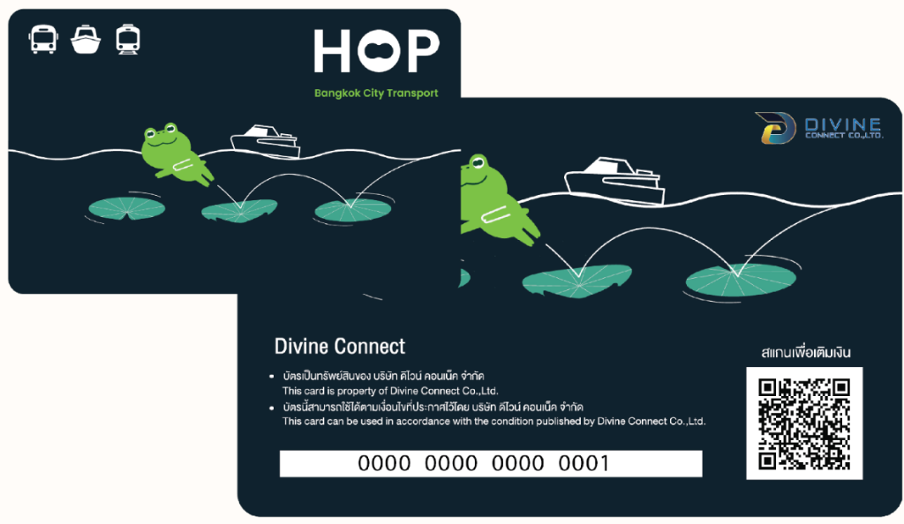
How the “Hop Card” works
As I mentioned, your card already have 40 Baht which is ready to use. However, next time after this use, you must top-up in the card at the first place. The point is just topping-up for 40 Baht that will suffice for that day, or you can add as much as you want ,its system will cut only 40 Baht. This process can be done with Mobile Banking or QR payment. There is a QR Code which leads to the payment methods.
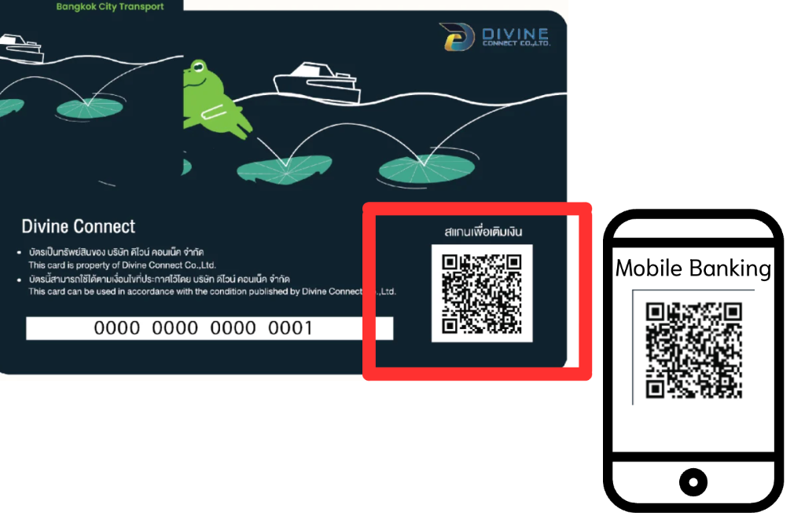
Next is to update and check your amount. You can do that by tapping your card at AVM scanner on the bus, hold it for a second. It will show your amount. Noted that every time you top up, you need to tap your card at AVM scanner before using your card to update your top-up process.
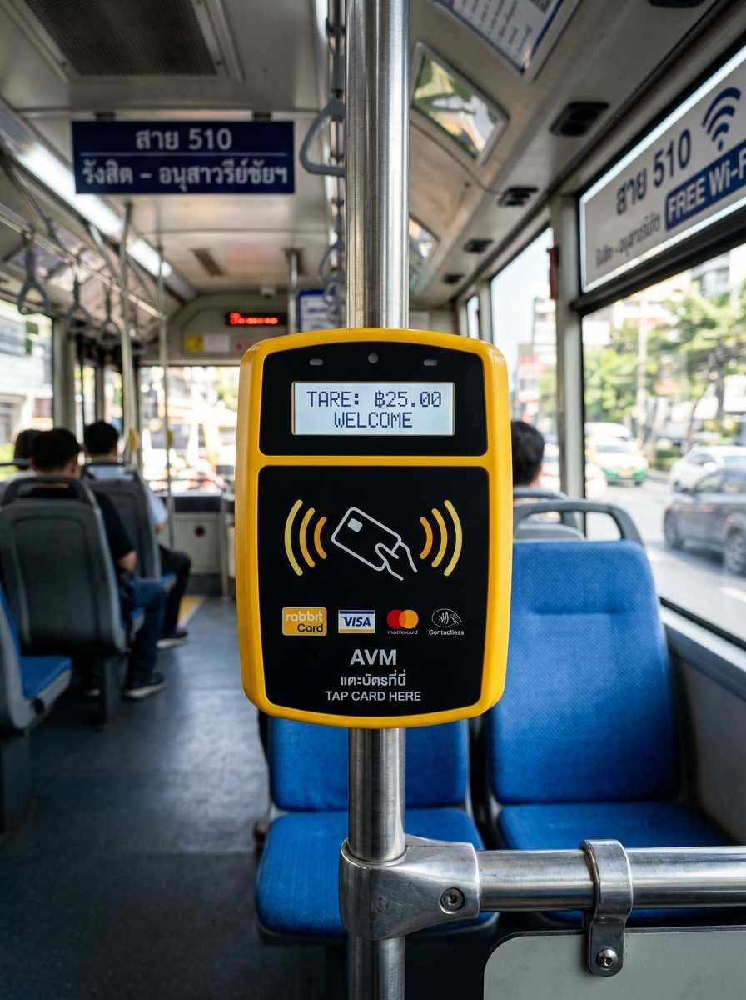
Alternatively, if you want to use your card immediately by not tapping at AVM scanner. Download TSB GO Plus Application on your smartphone. Add your card and your password in the card, click “Hop Card” at the middle, then “Refresh Balance” and “Update balance with NFC”, do as the picture says then your balance has been updated without tapping AVM on the bus. This app also shows your current balance on your screen so that you no need to tap at AVM. **I will talk about TSB Go Plus below
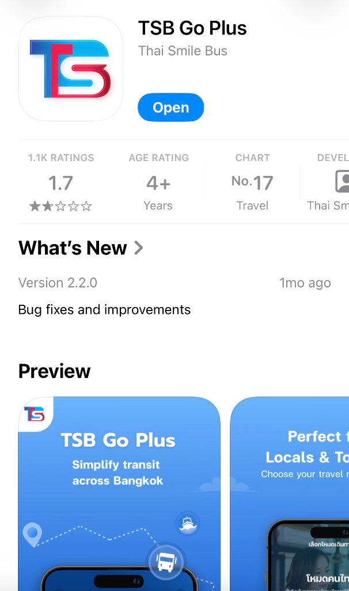
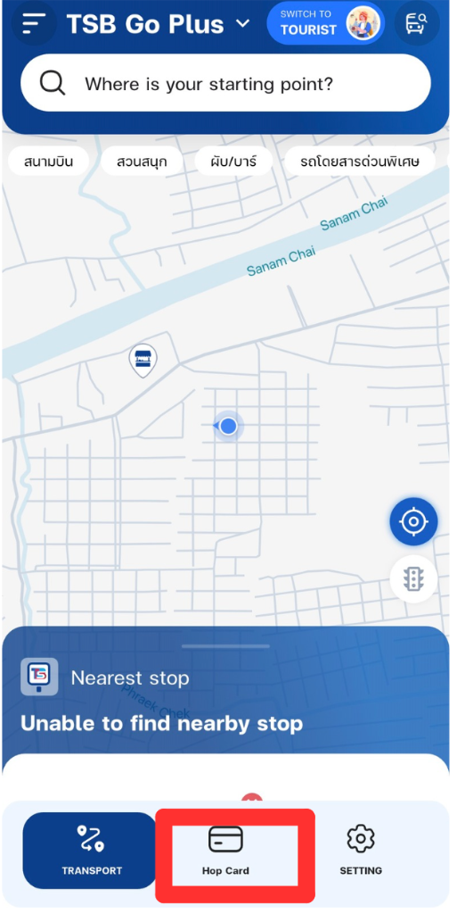
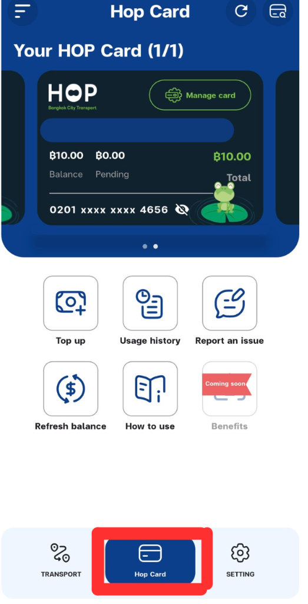
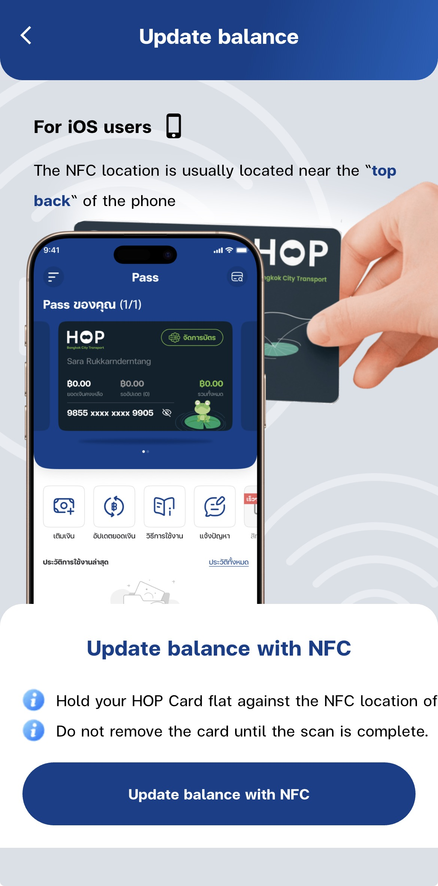
Next step is the key. After you have your balance ready in the card, tap it at the payment device right before you get on the bus. The payment device is right at your side. Then you will have to do nothing but just select your seat. When the bus collector comes, you need to show your “Hop Card”. That’s it. Importantly, when you arrive at your destination, do not forget to tap it again. If you do, your balance will be cut 20 Baht next time. Furthermore, don’t worry if the card says your current balance is 0. If you have already spent 40 Baht on that day, you can still use your card.
Notes
The Hop Card is operational to only an electric bus which has Thai Smile Bus Group’s logo on or you can notice it by the vehicle’s color that is dark or navy blue. Please make sure you are on the right one.
TBS Go Plus
If you already have the “Hop Card”, you must download “TBS Go Plus” on your smartphone as well. The “Hop Card” and this application work together. As I have talked, the card can be linked to the app to see the current balance and have NFC to update card balance by your smartphone. This is not it. It can track buses which are going to arrive at your nearby bus stop. Additionally, the app will estimate how much time those buses take to get at your location.
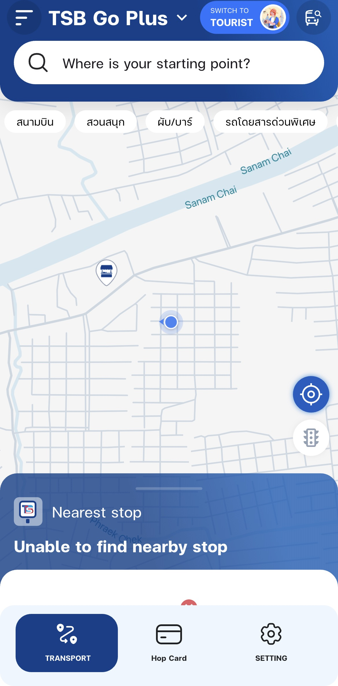
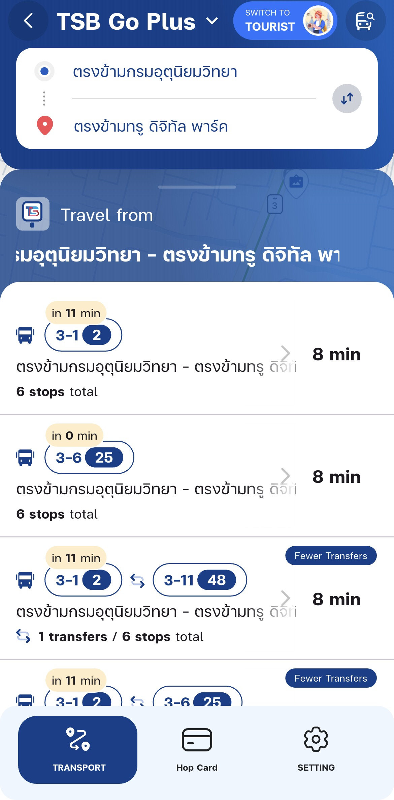
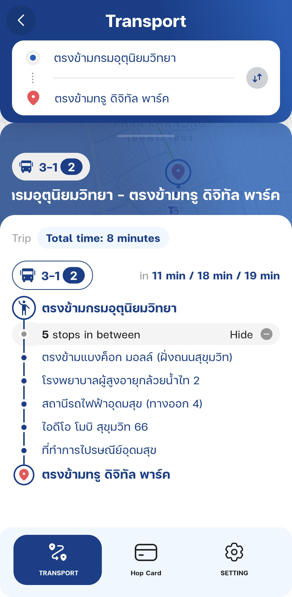
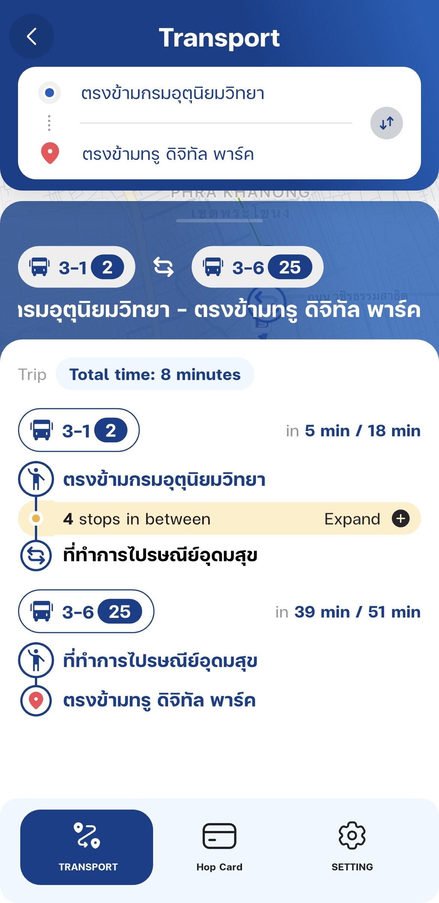
It also can suggest the best route to get to your target destination. By clicking at the search engine “Where is your starting point?” Select your starting point and where do you want to go. It will suggest a proper bus to take, the bus stop to follow.